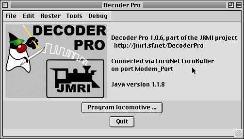
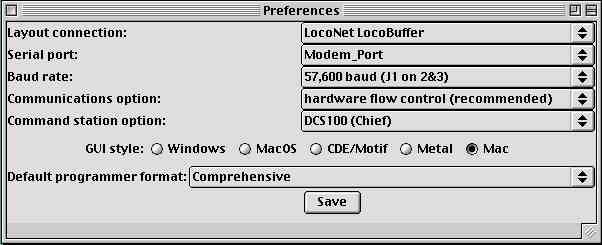

Getting Started with DecoderPro
What is DCC?
In short, DCC is Digital Command Control, a system for operating model
railroads in a more prototypical manner. Each locomotive contains a tiny,
specialized computer. These computers (decoders) take digital commands
addressed to them and interpret them to control the locomotive's speed,
direction, lighting effects, sound, and other functions. Each decoder responds
only to those commands addressed to it. Not every decoder will have functions
beyond basic throttle commands available to it. Although there are standards
for the format of communication (allowing the decoders from different manufacturers
to work on the same railroad), beyond that there is considerable variety
in the functions supported and the implementation of those functions.
Just like any other computer, decoders must be programmed by the user
to reach their full potential. While they come with basic "default" programs,
most users will want to customize the decoder address, motor control, lights,
sound, and other functions to meet their specific needs. You do so by editing
CVs,
or Configuration Variables, in the decoder. Some CVs use values
ranging from 0 to 255, others use their space in the decoder's memory as
a bank of 8 on/off switches. While this lets you do a lot with very little
memory, it can get very complex for those of us that aren't on speaking
terms with binary code.
DecoderPro attempts to help overcome the inevitable complexity of this
system by providing a clear, usable, user friendly open
source software solution for programming these on-board decoders.
Programming panel designs are written in XML, (a close relative
of HTML) and can be modified or even created from scratch by users with
even a passing familiarity with the format. Within 2 weeks of downloading
a early version of DecoderPro, with no previous XML experience, I had created
a programming set for a decoder myself.
What DCC systems will DecoderPro work with?
DecoderPro will work with the following DCC systems:
-
Easy DCC
-
Lenz/Atlas
-
Loconet (Digitrax)
-
NCE/Wangrow
Depending on the specifics of your system and computer, some kind of hardware
interface may be required.
What hardware do I need?
You will need, at minimum, a command station /booster for your DCC system,
and a programming track set up according to the manufacturer's instructions.
For some systems, you will also need an additional hardware interface to
send the commands from your computer to the command station, and from there
on to the decoder in the locomotive. For a Digitrax system, for example,
you will need either the MS100 interface or a LocoBuffer. The PR1 device
from Digitrax is a stand-alone programmer and is not usable with
this software.
You will also need, of course, some correctly installed decoders to
program.
How do I start the program?
Once you have downloaded the DecoderPro software and installed it, simply
open the program in the usual manner for your operating system. You should
see this or a similar opening screen displayed:

It may take a while for this screen to come up, especially on older
and slower computers. Remember that you are essentially running the program
on a Java emulator over your native operating system software. New computers
can do this fairly quickly, but older ones will feel like they're taking
forever. Be patient - it will come up eventually!
If this is the first time you have run the program, the preferences
screen will also come up automatically to allow you to set up the system
for your particular configuration.
How do I set up my preferences?
You can access your configuration preferences through the "Edit" option
in the screen above. They will also open automatically the first time you
run the program. Here's an example of what you will see:

In this example, the system is set up to:
-
Connect through a LocoBuffer hardware interface
-
Use the Modem port for communicating with the Locobuffer
-
Communicate at 57,600 baud
-
Allow the Locobuffer to control data flow
-
Work with a Digitrax DCS100 command station/booster (the Chief system)
-
Use a Macintosh style Graphic User Interface (GUI)
-
Default to a full-featured programming format (more on that later)
To change any of these options just click on the arrows to open the
pull-down menu. To change the GUI options, click on the appropriate radio
button. When you are finished, click on the "Save" button to save your
preferences. Changes in preferences will not take effect until the program
is re-started, and a dialog box giving you the option of continuing with
the old preferences or starting over will appear after you save the current
preferences.
Site hosted by: